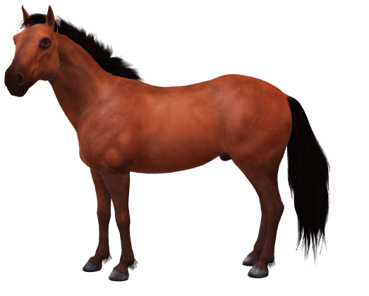

<html>

<head>
    <!-- for optimal display on high DPI devices -->
    <meta name="viewport" content="width=device-width, initial-scale=1.0" />

    <link rel="stylesheet" href="https://cdn.jsdelivr.net/npm/@photo-sphere-viewer/core/index.min.css" />
    <link rel="stylesheet" href="https://cdn.jsdelivr.net/npm/@photo-sphere-viewer/markers-plugin/index.min.css" />
    <link href="https://cdn.jsdelivr.net/npm/bootstrap@5.3.0-alpha1/dist/css/bootstrap.min.css" rel="stylesheet" integrity="sha384-GLhlTQ8iRABdZLl6O3oVMWSktQOp6b7In1Zl3/Jr59b6EGGoI1aFkw7cmDA6j6gD" crossorigin="anonymous">

</head>

<body>
    <script src="https://cdn.jsdelivr.net/npm/three/build/three.min.js"></script>
    <script src="https://cdn.jsdelivr.net/npm/@photo-sphere-viewer/core/index.min.js"></script>
    <script src="https://cdn.jsdelivr.net/npm/@photo-sphere-viewer/markers-plugin/index.min.js"></script>
    <script src="https://cdn.jsdelivr.net/npm/bootstrap@5.3.0-alpha1/dist/js/bootstrap.bundle.min.js" integrity="sha384-w76AqPfDkMBDXo30jS1Sgez6pr3x5MlQ1ZAGC+nuZB+EYdgRZgiwxhTBTkF7CXvN" crossorigin="anonymous"></script>
    <!-- the viewer container must have a defined size -->
    <div id="viewer" style="width: 100vw; height: 100vh;"></div>
    
    <script type="text/template" id="a1">
        <div class='alert alert-primary'>ม้า</div>
        (ชื่อวิทยาศาสตร์: Equus ferus caballus)
        
        <div>
        เป็นชนิดย่อยหนึ่งในสองชนิดของ Equus ferus หรือม้าป่าที่ยังเหลืออยู่ในปัจจุบัน เป็นสัตว์เลี้ยงลูกด้วยน้ำนมกีบคี่ในวงศ์ Equidae 
        ม้ามีวิวัฒนาการมากว่า 45 ถึง 55 ล้านปีจากสิ่งมีชีวิตหลายกีบเท้าขนาดเล็กสู่สัตว์กีบคี่ขนาดใหญ่ในปัจจุบัน 
        มนุษย์เริ่มนำม้ามาเลี้ยงเมื่อราว 4,000 ปีก่อนคริสตกาล และเชื่อว่าการเลี้ยงแพร่หลายเมื่อ 3,000 ปีก่อนคริสตกาล 
        ม้าชนิดย่อย caballus เป็นม้าบ้านแม้ว่าจะมีประชากรม้าบ้านบางส่วนจะอาศัยอยู่ในป่า เช่น ม้าเถื่อน (feral horses) 
        ม้าเถื่อนไม่ใช่ม้าป่าที่แท้จริง ดังเช่นม้าป่ามองโกเลียซึ่งถูกแบ่งแยกออกมาเป็นชนิดย่อยและเป็นชนิดเดียวที่เหลืออยู่ของม้าป่าที่แท้จริง 
        คำว่าม้าเถื่อนใช้เพื่อแสดงว่าม้านี้ไม่ใช่ม้าบ้าน มีคำศัพท์เฉพาะมากมายที่ใช้อธิบายแนวคิดที่เกี่ยวข้องกับม้า 
        ครอบคลุมจากกายวิภาคถึงช่วงชีวิต ขนาด สี สัญลักษณ์ การเพาะพันธุ์ การเคลื่อนไหว และพฤติกรรม 
        </div>
    </script>

    <script type="text/template" id="a2">
        <div class='alert alert-primary'>จิงโจ้</div>
        (ชื่อวิทยาศาสตร์: Equus ferus caballus)
        
        <div>
        เป็นชนิดย่อยหนึ่งในสองชนิดของ Equus ferus หรือม้าป่าที่ยังเหลืออยู่ในปัจจุบัน เป็นสัตว์เลี้ยงลูกด้วยน้ำนมกีบคี่ในวงศ์ Equidae 
        ม้ามีวิวัฒนาการมากว่า 45 ถึง 55 ล้านปีจากสิ่งมีชีวิตหลายกีบเท้าขนาดเล็กสู่สัตว์กีบคี่ขนาดใหญ่ในปัจจุบัน 
        มนุษย์เริ่มนำม้ามาเลี้ยงเมื่อราว 4,000 ปีก่อนคริสตกาล และเชื่อว่าการเลี้ยงแพร่หลายเมื่อ 3,000 ปีก่อนคริสตกาล 
        ม้าชนิดย่อย caballus เป็นม้าบ้านแม้ว่าจะมีประชากรม้าบ้านบางส่วนจะอาศัยอยู่ในป่า เช่น ม้าเถื่อน (feral horses) 
        ม้าเถื่อนไม่ใช่ม้าป่าที่แท้จริง ดังเช่นม้าป่ามองโกเลียซึ่งถูกแบ่งแยกออกมาเป็นชนิดย่อยและเป็นชนิดเดียวที่เหลืออยู่ของม้าป่าที่แท้จริง 
        คำว่าม้าเถื่อนใช้เพื่อแสดงว่าม้านี้ไม่ใช่ม้าบ้าน มีคำศัพท์เฉพาะมากมายที่ใช้อธิบายแนวคิดที่เกี่ยวข้องกับม้า 
        ครอบคลุมจากกายวิภาคถึงช่วงชีวิต ขนาด สี สัญลักษณ์ การเพาะพันธุ์ การเคลื่อนไหว และพฤติกรรม 
        </div>
    </script>

    <script>
        const viewer = new PhotoSphereViewer.Viewer({
            container: document.querySelector('#viewer'),
            panorama: 'img01/full2.jpg',
            useXmpData: false,
            plugins: [
                [PhotoSphereViewer.MarkersPlugin, {
                    markers: [
                        {
                            id: 'm1',
                            position: { yaw: '-30deg', pitch: '0deg' },
                            imageLayer: 'img01/a1.png',
                            size: { width: 375*1.5, height: 510*1.5 },
                            tooltip:"<div class='alert alert-primary'>ม้า</div>",
                            content:document.getElementById("a1").innerHTML,
                        },    
                        {
                            id: 'm2',
                            position: { yaw: '-60deg', pitch: '0deg' },
                            imageLayer: 'img01/a2.png',
                            size: { width: 520, height: 654 },
                            tooltip:"<div class='alert alert-primary'>จิงโจ้</div>",
                            content:document.getElementById("a2").innerHTML,
                        },             
                        {
                            id: 'm3',
                            position: { yaw: '60deg', pitch: '0deg' },
                            imageLayer: 'img01/a3.png',
                            size: { width: 375, height: 510 },
                            tooltip:"<div class='alert alert-primary'>แพะ</div>",
                            content:document.getElementById("a2").innerHTML,
                        },                                         
                        {
                            id: 'm4',
                            position: { yaw: '115deg', pitch: '10deg' },
                            imageLayer: 'img01/a4.png',
                            size: { width: 463*0.2, height: 507*0.2 },
                            tooltip:"<div class='alert alert-primary'>หมีโคล่า</div>",
                            content:document.getElementById("a2").innerHTML,
                        },         
                    ],
                }],
            ],

        });
    </script>
</body>

</html>